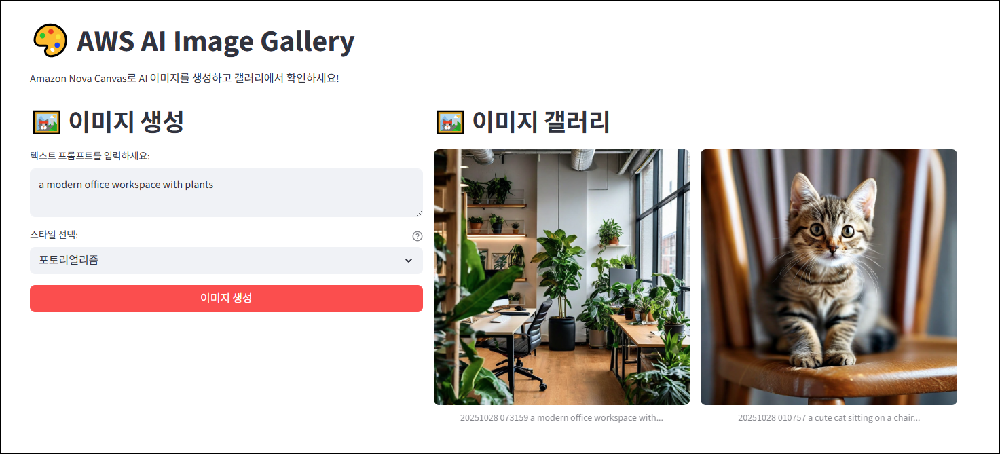

Task 1: 애플리케이션 보완
이전 활동에서 Amazon Q를 활용하여 AI 이미지 갤러리 웹 애플리케이션의 기본 기능을 구현했습니다.
이번 활동에서는 @workspace Context를 활용하여 프로젝트 전체 코드를 이해하고, 기존 구조를 유지하면서 새로운 기능을 점진적으로 추가하는 방법을 실습합니다. Amazon Nova Canvas 모델의 고급 옵션을 탐색하고 실제로 적용하는 과정을 통해, AI와 협력하여 소프트웨어를 발전시키는 경험을 체험합니다.
🎯 학습 목표
- ✅
@workspaceContext 인덱싱을 활성화하고 활용하기 - ✅ 기존 코드베이스를 분석하여 일관성 있는 기능 추가하기
- ✅ Amazon Nova Canvas의 고급 파라미터 탐색 및 적용하기
- ✅ 변경 이력을 문서화하고 관리하기
Act 1: Workspace 인덱싱 활성화
@workspace Context는 프로젝트 전체 코드베이스를 Amazon Q가 이해하고 참조할 수 있게 해주는 강력한 기능입니다.
1-1. @workspace
@workspace는 다음과 같은 이점을 제공합니다:
- 📁 전체 프로젝트 참조: 열리지 않은 파일도 자동으로 검색 및 분석
- 🔗 코드 간 의존 관계 파악: 함수 호출, 클래스 상속 등을 추적
- 🎯 관련성 높은 코드 선택: AI가 질문과 가장 관련 있는 코드 조각을 자동 선택
- 🧠 컨텍스트 통합: 여러 파일에 걸친 정보를 종합하여 정확한 답변 제공
인덱싱이란?
Amazon Q Developer는 프로젝트의 모든 파일을 분석하여 인덱스(색인)를 생성합니다. 이 인덱스를 통해 AI가 대규모 코드베이스에서도 빠르게 관련 정보를 찾을 수 있습니다.
인덱스는 주기적으로 자동 업데이트되므로, 코드 변경 사항이 자동으로 반영됩니다.
1-2. Workspace 인덱싱 설정
-
Amazon Q 설정 열기:
- VS Code에서 [Extensions] → [Amazon Q] → [Manage] → [Settings] 순서로 클릭합니다.

-
Index 활성화:
- "Amazon Q: Workspace Index" 옵션을 찾아 체크박스를 활성화합니다.

초기 인덱싱 시간
프로젝트 크기에 따라 초기 인덱싱은 5~20분 소요될 수 있습니다.
- 소규모 프로젝트 (파일 10개 미만): 1~2분
- 중규모 프로젝트 (파일 50개): 5~10분
- 대규모 프로젝트 (파일 수백 개): 15~20분
1-3. 새 채팅 세션 시작
-
채팅 입력창에
/clear를 입력하거나, 상단 탭에서 "+" 버튼을 클릭하여 새 채팅을 시작합니다.
새 채팅을 시작하는 이유
이전 대화의 Context가 섞이지 않도록 깨끗한 상태에서 시작합니다. 새로운 기능 추가 작업은 독립적인 세션에서 진행하는 것이 좋습니다.
1-4. @workspace Context 고정
-
채팅 입력창 상단의 "@Pin Context" 버튼을 클릭합니다.
-
드롭다운 메뉴에서
@workspace를 선택합니다. -
선택한
@workspace가 입력창 상단에 고정되는지 확인합니다.
@workspace 활성화 완료!
이제 Amazon Q가 모든 질문에서 자동으로 프로젝트 전체를 참조합니다!
Act 2: Amazon Nova Canvas 기능 확장 방안 탐색
현재 구현된 기능:
- ✅ 텍스트 프롬프트 입력
- ✅ 이미지 생성 및 표시
- ✅ S3 저장 및 갤러리 조회
2-1. 확장 방안 탐색 요청하기
-
다음 프롬프트를 입력하여 Amazon Q에게 확장 가능한 기능을 조사하도록 요청합니다:
확장 방안 탐색 프롬프트
현재 애플리케이션은 단일 입력 프롬프트를 Amazon Nova Canvas에 전달하여 이미지를 생성합니다. 공식 문서를 참고해 Amazon Nova Canvas의 요청 구조(request syntax)를 분석하고, 이 애플리케이션을 확장할 수 있는 방안을 제안하세요. (코드 및 파일 생성 X)
2-2. Amazon Q의 분석 결과 검토
-
결과 확인
예시 응답
Amazon Nova Canvas 요청 구조 분석 및 확장 방안 공식 문서를 기반으로 Amazon Nova Canvas의 요청 구조를 분석하고 애플리케이션 확장 방안을 제안합니다. 현재 애플리케이션의 요청 구조 현재 애플리케이션은 기본적인 TEXT_IMAGE 태스크만 사용하고 있습니다 Amazon Nova Canvas 완전한 요청 구조 공식 문서에 따르면 Nova Canvas는 다음과 같은 다양한 기능을 지원합니다: 1. 지원되는 태스크 타입 - TEXT_IMAGE: 텍스트 → 이미지 생성 - COLOR_GUIDED_GENERATION: 색상 팔레트 기반 생성 - IMAGE_VARIATION: 이미지 변형 생성 - INPAINTING: 이미지 내부 영역 수정 - OUTPAINTING: 이미지 외부 영역 확장 - BACKGROUND_REMOVAL: 배경 제거 - VIRTUAL_TRY_ON: 가상 착용 (최신 기능) 2. 고급 파라미터 - cfgScale: 프롬프트 준수 강도 (1.0-20.0) - seed: 재현 가능한 결과를 위한 시드값 - negativeText: 원하지 않는 요소 제외 - style: 8가지 사전 정의된 스타일 - quality: "standard" 또는 "premium" 애플리케이션 확장 방안 1. 기본 기능 확장 - 스타일 선택기: 8가지 사전 정의된 스타일 옵션 제공 - 고급 설정 패널: cfgScale, seed, negativeText 조정 - 이미지 품질 옵션: standard/premium 선택 - 다중 이미지 생성: numberOfImages 조정 (최대 4개) 2. 이미지 편집 기능 - 인페인팅: 기존 이미지의 특정 부분 수정 - 아웃페인팅: 이미지 배경 확장 - 배경 제거: 자동 배경 투명화 - 이미지 변형: 기존 이미지 기반 새로운 버전 생성 3. 고급 생성 기능 - 색상 가이드: 헥스 색상 코드로 색상 팔레트 지정 - 이미지 컨디셔닝: 참조 이미지의 레이아웃/구성 활용 - 가상 착용: 의류/액세서리 가상 착용 시뮬레이션 4. 사용자 경험 개선 - 프리셋 관리: 자주 사용하는 설정 저장/불러오기 - 배치 생성: 여러 프롬프트 일괄 처리 - 히스토리 관리: 생성 기록 및 재생성 기능 - 템플릿 시스템: 카테고리별 프롬프트 템플릿 5. 워크플로우 통합 - 이미지 편집 파이프라인: 생성 → 편집 → 재생성 워크플로우 - A/B 테스트: 동일 프롬프트로 다른 설정 비교 - 스타일 전이: 기존 이미지에 새로운 스타일 적용 구현 우선순위 - 1단계: 스타일 선택기, 고급 설정 패널 - 2단계: 이미지 편집 기능 (인페인팅, 배경 제거) - 3단계: 가상 착용, 색상 가이드 기능 - 4단계: 워크플로우 통합 및 배치 처리 이러한 확장을 통해 단순한 텍스트-이미지 생성기에서 종합적인 AI 이미지 생성 및 편집 플랫폼으로 발전시킬 수 있습니다.
Act 3: 스타일 선택 기능 구현
3-1. 기능 구현 요청
-
다음 프롬프트를 입력하여 Amazon Q에게 구현을 요청합니다:
기능 구현 프롬프트
현재 구성된 이미지 생성 애플리케이션에 사전 정의된 스타일 선택 기능을 추가하세요. 변경된 내용은 `changelog.md` 문서를 생성하여 기록하세요.
3-3. 생성된 응답 및 코드 검토
-
Amazon Q가 생성한 내용을 확인
예시 응답
-
코드 변경 사항을 확인
예시 변경 사항

-
Changelog 문서를 확인
changelog.md예시# Changelog ## [1.1.0] - 2025-10-28 ### Added - **스타일 선택 기능**: Amazon Nova Canvas의 사전 정의된 8가지 시각적 스타일 지원 - 포토리얼리즘 (PHOTOREALISM) - 3D 애니메이션 (3D_ANIMATED_FAMILY_FILM) - 디자인 스케치 (DESIGN_SKETCH) - 플랫 벡터 (FLAT_VECTOR_ILLUSTRATION) - 그래픽 노블 (GRAPHIC_NOVEL_ILLUSTRATION) - 맥시멀리즘 (MAXIMALISM) - 미드센추리 레트로 (MIDCENTURY_RETRO) - 소프트 디지털 페인팅 (SOFT_DIGITAL_PAINTING) ### Changed - `AWSServices.generate_image()` 메서드에 선택적 `style` 파라미터 추가 - Streamlit UI에 스타일 선택 드롭다운 추가 - 테스트 케이스에 스타일 파라미터 검증 로직 추가 ### Technical Details - Nova Canvas API의 `textToImageParams`에 `style` 필드 조건부 추가 - 사용자 친화적인 한국어 스타일 이름과 API 값 매핑 - 기본값은 스타일 없음으로 설정하여 기존 동작 유지 ## [1.0.0] - 2025-10-27 ### Initial Release - Amazon Nova Canvas를 이용한 텍스트-이미지 생성 기능 - S3 자동 업로드 및 저장 - Streamlit 기반 웹 인터페이스 - 기본 이미지 갤러리 기능
Act 4: 새 기능 테스트 및 검증
4-1. 서버 재시작
-
현재 실행 중인 서버 종료:
- 터미널에서 Ctrl + C (Windows/Linux) 또는 Cmd + C (Mac)를 누릅니다.
-
서버 재시작:
uv run main.py
4-2. 새 UI 확인
-
브라우저에서 애플리케이션을 엽니다.
-
스타일 선택 기능이 추가되었는지 확인합니다.
4-3. 스타일 선택 기능 테스트
-
텍스트 프롬프트를 입력 (예: 프롬프트 입력: "a modern office workspace with plants")
-
스타일을 선택. (예: 포토얼리즘(PHOTOREALISM))
-
이미지 생성
-
결과 확인 (예: 사실적인 스타일의 이미지가 생성되는지 확인)

✅ 요약
이 워크숍 활동에서 다음 항목을 실습했습니다:
- ✅
@workspaceContext 활성화: 프로젝트 전체 코드베이스를 AI가 이해하도록 설정 - ✅ 기존 코드 분석: AI가 자동으로 코드 구조와 패턴을 파악
- ✅ 점진적 기능 추가: 스타일 선택 구현
- ✅ 일관성 있는 통합: 기존 코드 스타일을 유지하며 확장
- ✅ 변경 이력 관리: changelog.md로 문서화
- ✅ 실전 테스트: 새 기능의 실제 작동 검증